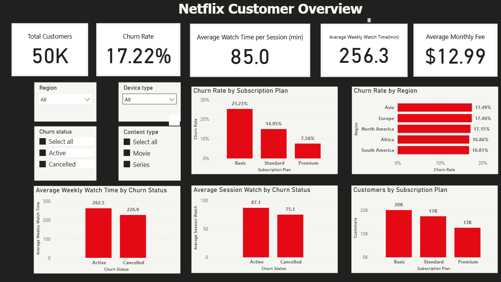

Netflix customer analytics: churn and retention
Problem: Which customers cancel, and what separates them from those who stay?
Finding: Basic subscribers churn at 25.2%, more than 3 times the Premium rate (7.6%). Cancelled customers also watch less (227 vs 262 minutes per week).
Action: Target Basic subscribers with retention offers and use low weekly watch time as an early-warning signal.

